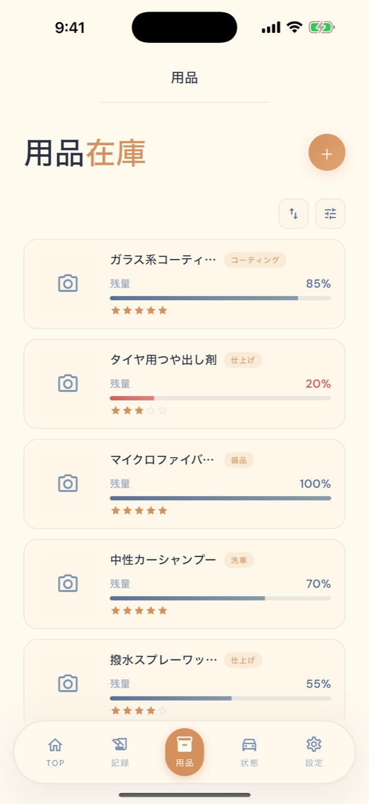
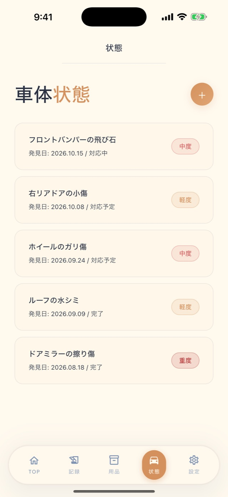

前回の、
いつだっけ？CAReLOG なら、すぐ分かる。
洗車の記録、用品の残量、キズの履歴。愛車の手入れをひとつにまとめて、天気予報から次の洗車日まで分かります。
無料会員登録なし記録は端末の中に保存

洗車の記録、用品の残量、キズの履歴。愛車の手入れをひとつにまとめて、天気予報から次の洗車日まで分かります。
無料会員登録なし記録は端末の中に保存
Try it
汚れた車を、指やマウスでこすってください。ピカピカになったら、記録します。
こすって洗う
だいぶ汚れています
アプリでは、作業内容・天気・費用・写真もいっしょに残せます。
Wash forecast
せっかく洗っても、次の日に雨では台なし。実際の天気予報から、洗車にいい日を探します。
翌日まで雨や雪の予報がない日を「洗車日和」としています。天気予報は気象庁の発表をもとにした 天気予報 API から取得しています。
Inside the app
「前回いつ洗ったっけ？」も、「あのコーティング剤、まだある？」も。
← スワイプ →
前回から何日か、今年何回か、
いくら使ったか。天気予報も。

作業内容・天気・費用・写真。
並べ替えや絞り込みもできます。

シャンプーやコーティング剤。
少なくなると赤で分かります。

キズやへこみを写真つきで。
深刻度と修理の進み具合も。
Stock check
用品の残りはスライダーで記録。30% を切ると赤く表示され、次の洗車日が近づくとお知らせします。
右のスライダーを、左にずらしてみてください。
Features
入力は短く、見返すのはひと目で。洗車が好きな人の、手帳がわりに。
ログイン不要。
入れたらすぐ記録できます。
決めた周期に合わせて、
3日前・前日・当日に通知。
洗車・コーティング・
鉄粉除去・ワックスなど。
車ごとに分けて
まとめて管理できます。
記録はすべて端末の中に保存されます。機種変更に備えて、Google ドライブへのバックアップも選べます（任意）。
ダウンロードは無料です。